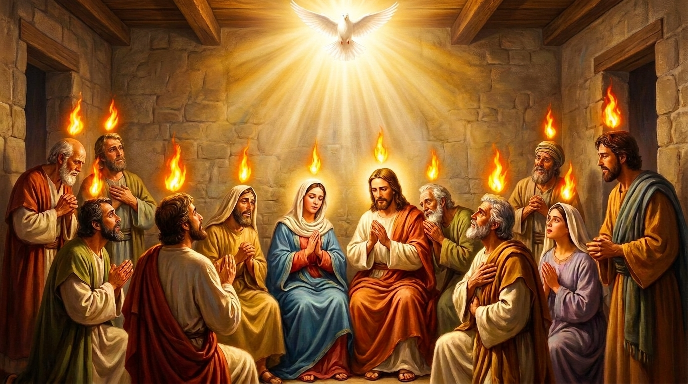

O Espírito Santo e a Igreja em Ação
O livro de Atos dos Apóstolos, também escrito por Lucas, é a continuação do seu Evangelho. Ele narra o nascimento explosivo da igreja cristã logo após a ressurreição e ascensão de Jesus. A história começa em Jerusalém com a descida do Espírito Santo no dia de Pentecostes, capacitando os apóstolos a pregar com ousadia. A partir daí, o livro acompanha a expansão imparável da mensagem de Cristo — primeiro através de Pedro aos judeus, e depois com a dramática conversão de Paulo, que se torna o grande missionário a levar o evangelho aos não judeus (gentios) por todo o Império Romano.
Ficha Técnica
- Autor: O médico Lucas (o mesmo autor do Evangelho de Lucas).
- Tema Principal: A vinda do Espírito Santo, o início e o crescimento da igreja primitiva, e a expansão do evangelho até os confins da terra.
- Versículo-Chave: "Mas receberão poder quando o Espírito Santo descer sobre vocês, e serão minhas testemunhas em Jerusalém, em toda a Judeia e Samaria, e até os confins da terra." (Atos 1:8)
Estrutura
- A ascensão de Jesus e o derramamento do Espírito Santo no Pentecostes (Caps. 1-2)
- O crescimento e a perseguição da igreja em Jerusalém (Caps. 3-7)
- A expansão para a Judeia e Samaria, e a conversão de Saulo (Paulo) (Caps. 8-12)
- As viagens missionárias de Paulo até os confins do Império Romano (Caps. 13-28)